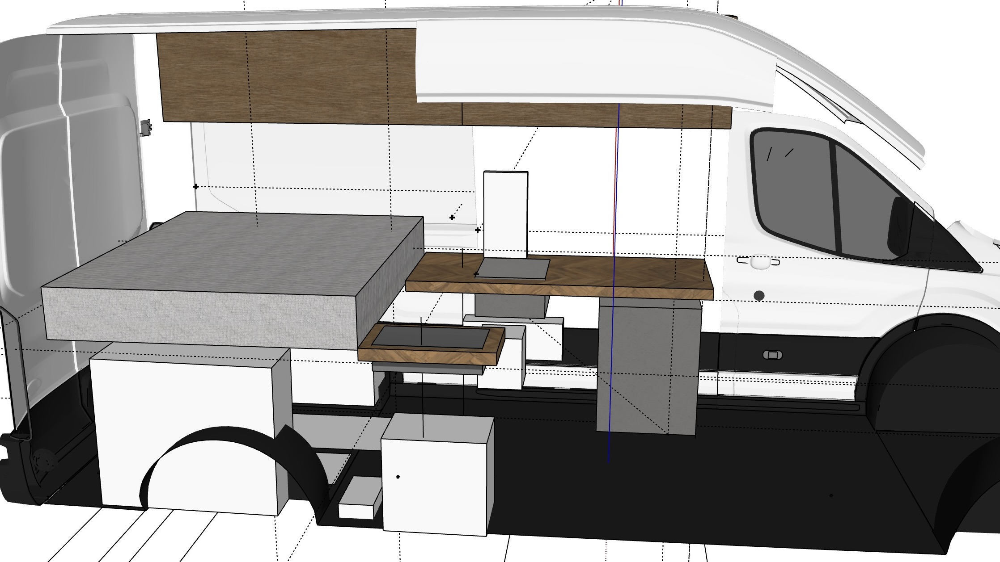
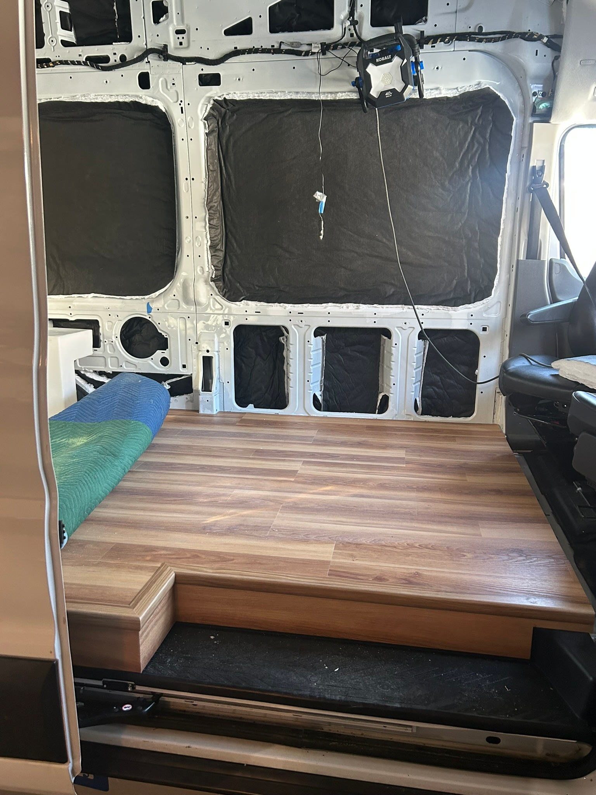
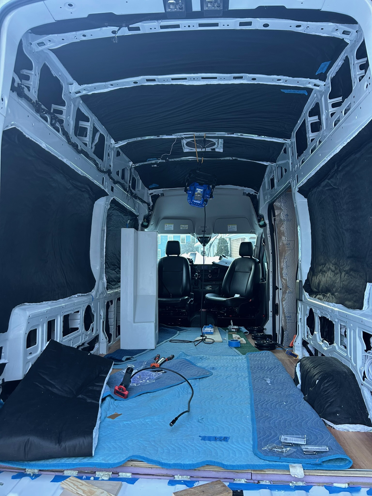
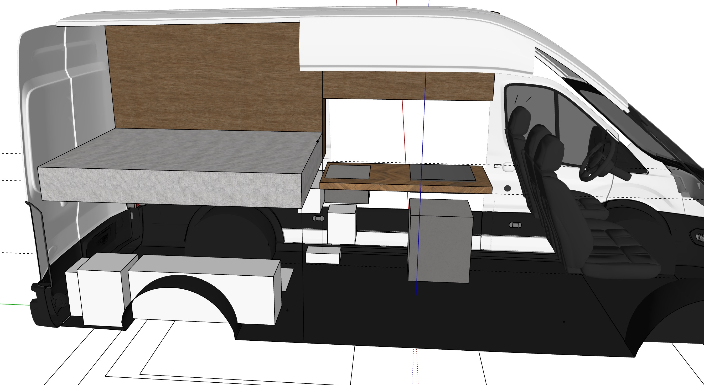
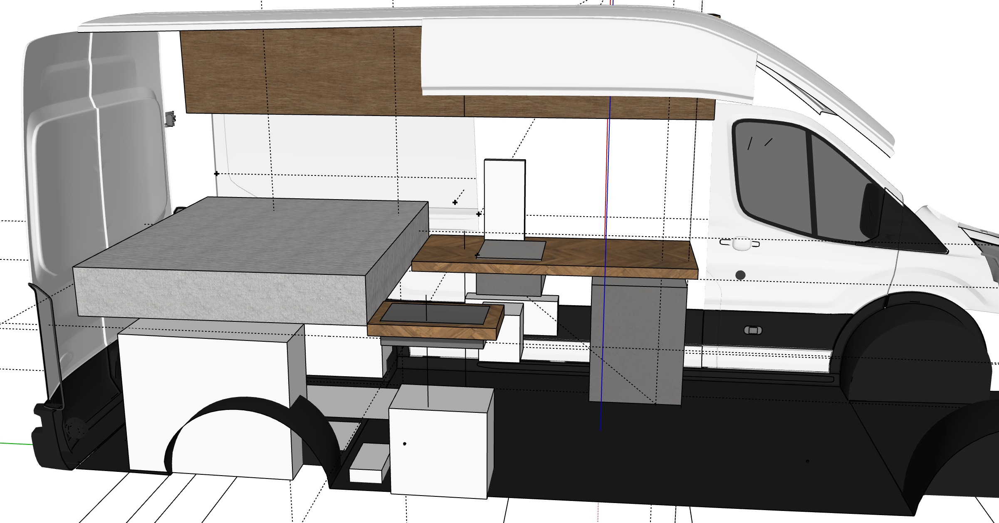
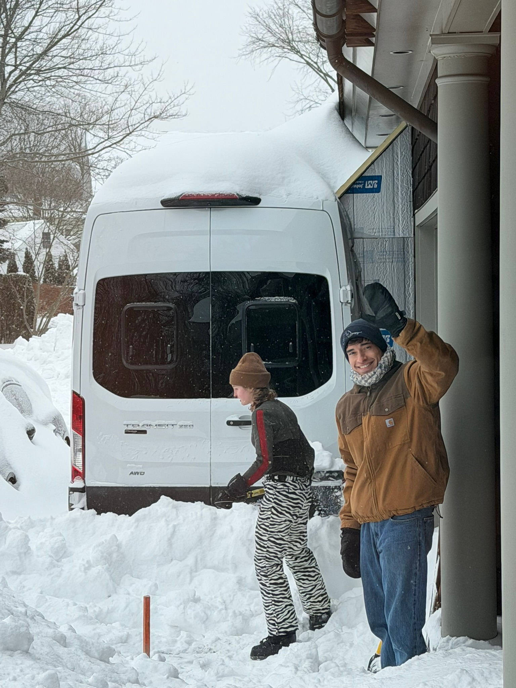
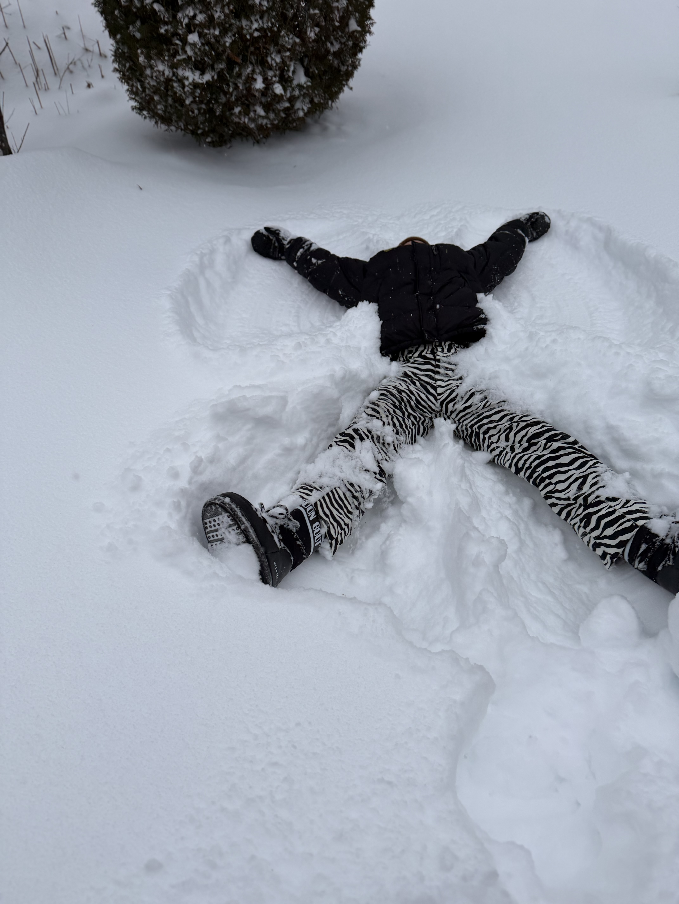
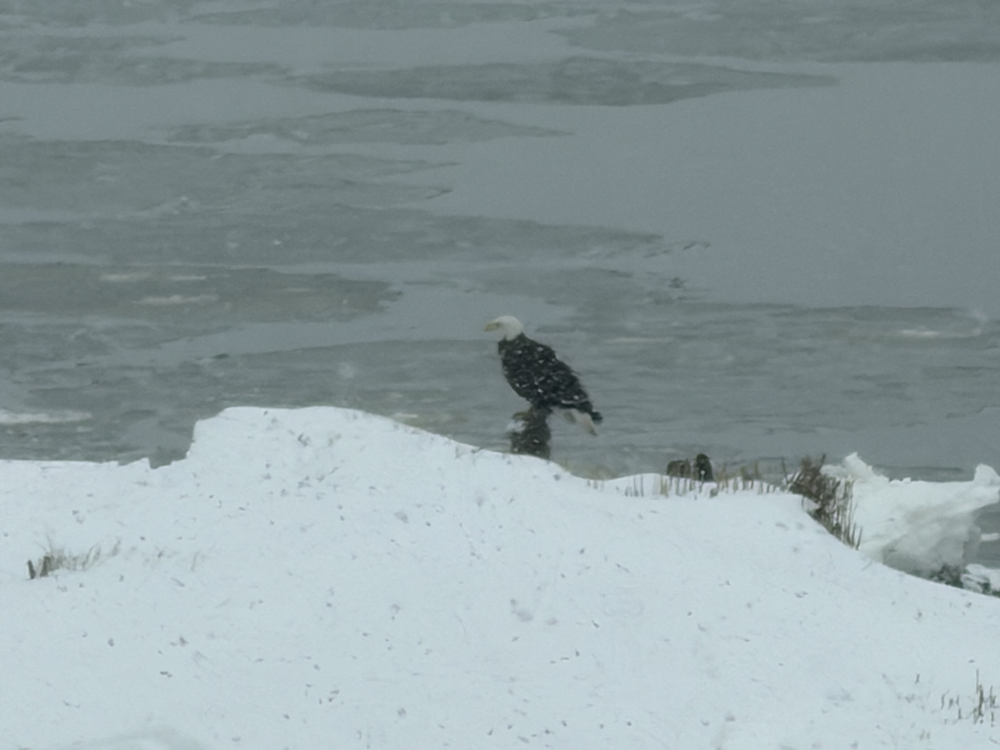
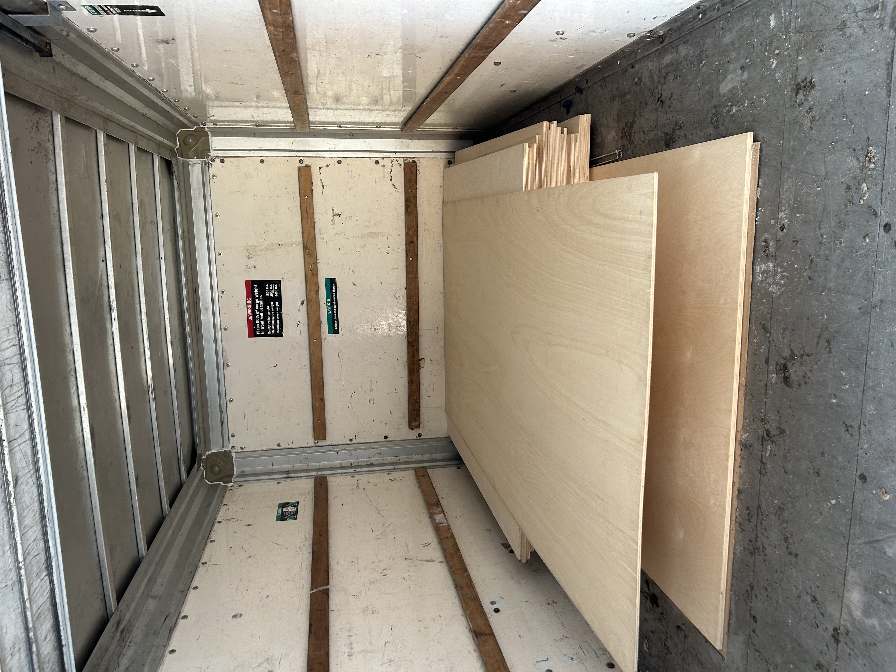
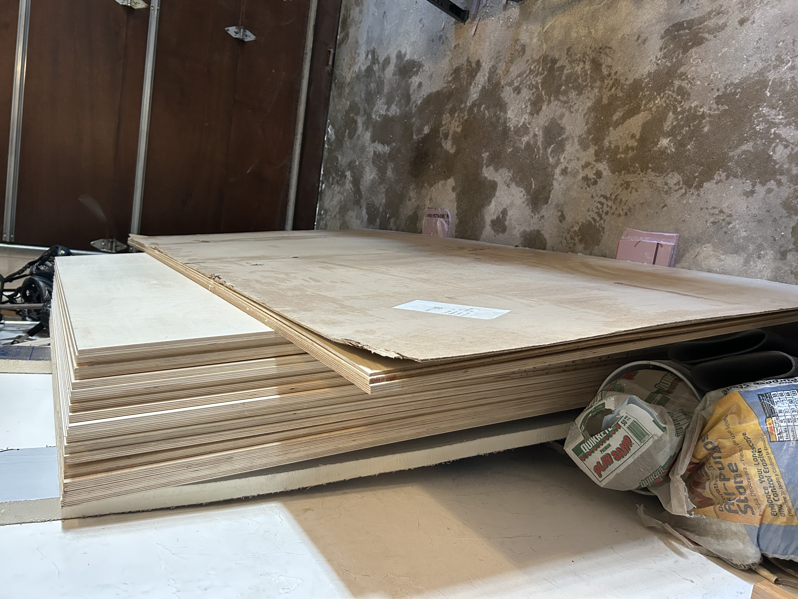

reVANp
Redoing the layout

After a brief hiatus (shoutout to Abby for defending her PhD and giving me an excuse to return to 70 degree weather for a couple days), we tackled the last easy items on our list. Despite the surprising number of steps involved to make something look finished, we finally completed the step leading into the van. Hopefully it holds up under stress testing! We also put up insulation in the van, spray-adhesiving it to the walls and stuffing it in all the crevices we could manage.


Next, we hit the point where we needed to make lots of interdependent decisions. We had come in with a plan of what the layout would look like. But, there are always so many more details to think through. The first layout issue we ran into was the battle between bike height when stored in “the garage” (under the bed) and having headroom while sitting up in bed. For me, with a short bike and short torso, this isn’t an issue, but Zac is difficult being taller! My dad was on team headroom, even coming up with strategies for horizontal bike storage. We wanted to maintain versatility in the garage space, though. So after some good head scratching, we managed to optimize the vertical stack so we can fit Zac’s bike (albeit with the seat off) upright and still give him plenty of headroom.
My Dad, being a sucker for optimizing everything, asked if we had considered building bumpouts to be able to sleep sideways and maximize our space. After thinking through it for a couple days, we decided to stick with our original layout (pictured on the left)… but after playing around with our 3D model, we realized we could actually make it happen and decided to go for it (pictured on the right). Now, we will get an extra cabinet which contains all our propane powered items and a lot of extra counter space.


While we were redoing our internal layout, the environment around us also got a makeover! We got hit with a huge storm and a few feet of snow. We spent a good chunk of the next day digging the van out, but also made sure to play in the snow. A group of bald eagles (parents and a juvenile) showed up to visit the van and have been hanging around since.



With our design somewhat more finalized, we were ready to stock up on the most critical van material: plywood! It couldn’t be just any plywood either. Baltic birch provides some key advantages, like good strength to weight ratio and screw holding power. It also just looks way prettier than normal plywood because of the high density plys. We quickly realized that we would be forever ruined when it came to plywood by starting our woodworking journey with such nice material.
Now, for the challenge of acquiring the plywood. Baltic birch is produced and imported by Russia and Ukraine, so there have been major supply chain issues. I managed to track some down at a reasonable price up in Maine, and got to work on building our cut list. After trying and failing to take shortcuts, we realized we needed to just draw out every sheet of plywood and the geometry of the cuts we make from it for every cabinet. We decided to throw in one piece of bendyply which is this awesome plywood that is bendable in one direction. An unfortunate consequence of having sealed the van to the garage for the winter, though, was that we needed to rent a UHaul to pick up our >400 lbs of wood. We got it all back safe and sound with only a few splinters to show for it. Time to start deploying it!

